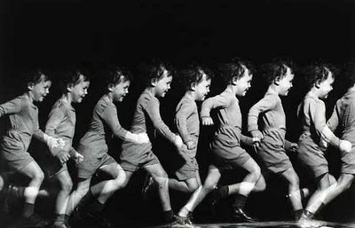
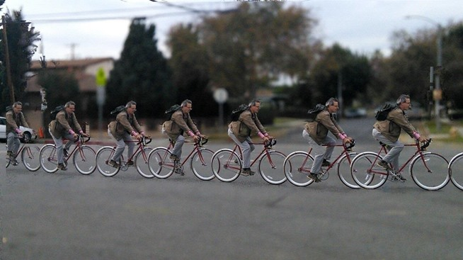
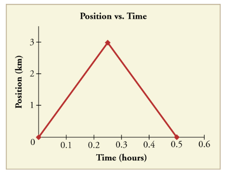
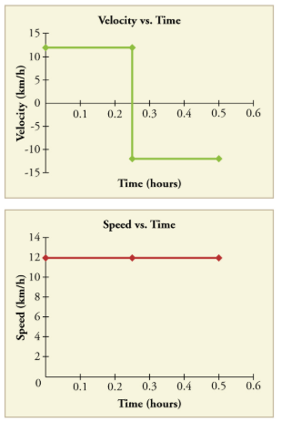

class: center, middle .title[Motion] .subtitle[A Descriptive *Model* for Particles 🚗🚗🚗] .author[👨🏻🏫 Nathan Porter] .institution[🏫 Maple Hill High School] .coauthor[] .institution[] .date[📅 2018-2019] .center[] <!--.footnote[Created with [{Remark.js}](http://remarkjs.com/) using [{Markdown}](https://daringfireball.net/projects/markdown/) + [{MathJax}](https://www.mathjax.org/)]--> --- #Lab Results: #### The buggies moved with a *constant velocity* -- - means that it changed its *position* equal amounts for each equal change in *time* -- #### *Velocity* is represented by the *slope* of the position vs. time graph -- - how "fast" -- - AND what direction #### *Speed* is the steepness of the slope: -- - it tells us the rate that position changes with time -- - steeper slope == faster -- #### The initial position of the object is the y-intercept -- - it tells us where the object is at clock reading 0. --- #Models... #### General Mathematical Mode: $$x = \bar{v}t + x_0$$ -- ####Specific Mathematical Model (example): $$x = (25 \textrm{ cm/s})t + 250 \textrm{ cm}$$ -- ####Narrative Model: *"The toy car started at a position of 250 cm and moved in the positive direction at a speed of 25 cm/s."* --- #Lab Report - Discussion section: - You are reporting what you found -- - Open with a statement of key findings and reference those findings with data from the lab. -- - for example: the linear relationship in the graph shows that the buggy moved in a consistent manner. -- - Be sure to answer all of the essential questions that we asked: 1. Does your buggy move in a consistent manner? - How does the _position_ of your buggy relate to the _clock reading_ 2. Does your starting position matter? 3. How does your buggy differ (in terms of motion) from the other groups buggies? --- #Lab Report - Conclusion Step 1: Write a paragraph summarizing what you have learned about the scientific concept of the lab from doing the lab. Back up your statement with details from your lab experience. -- Step 2: If there is anything else you have learned about from doing the lab, such as how to solve this particular problem, how to design an experiment, the kinds of the lab procedures or kinds of analyses you used, describe it in a paragraph or 2. --- class:center, middle #Defining "How Far" ###Who went further? Dorothy or Toto? --- ###Displacement - Change in position of an object - `\(\Delta x = x_f - x_i\)` - Includes direction -- ###Distance - the **magnitude** (or size) of displacement between two positions - more often referred to as ***distance traveled** which is the total length of the path traveled between two positions -- ###Position - Where an object is at any particular time - "Location" --- background-image: url("../figures/CER Structure.png") --- #CER in our class: ####Claim: Sentence that answers the question. -- ####Evidence: Explanation of how the evidence supports the claim. - Should include details! - Refer back to the question, include any data, diagrams, or graphs. -- ####Reasoning: Physics principle, such as an equation, law, or definition. - This is general, do no include specific details. --- class:center, middle #Who/What is the little girl's dad? --- class:center, middle <iframe width="100%" height="100%" src="https://www.youtube.com/embed/sVRAtQ7XjkM" frameborder="0" allow="autoplay; encrypted-media" allowfullscreen></iframe> --- #CER - What claims does the little girl make? -- - What evidence does she supply? -- - What is her reasoning? --- class: center, middle # Does the object in the image or video move with a constant velocity? --- background-image: url("../figures/cvbuggy.JPG") --- background-image: url("../figures/pullback.JPG") --- background-image: url("../figures/littlegirl.png") --- class:center, middle  --- class:center, middle  --- background-image: url("../figures/cliffjump.jpg") --- background-image: url("../figures/dirtbike.jpg") --- class:center, middle <video preload="auto" width="100%" height="auto" data-setup="{}" loop controls><source src="../videos/glidersfar.mp4" type="video/mp4" /></video> --- class:center, middle <video preload="auto" width="100%" height="auto" data-setup="{}" loop controls><source src="../videos/gliderszoomed.mp4" type="video/mp4" /></video> --- #CER Task: 1. Go through all of the images and the video and decide as a group if the object moves with a constant velocity. 2. One one side of a whiteboard make a claim (constant or non-constant velocity) for each image and video 3. On the other side of the whiteboard you will be assigned an image or video to provide evidence and reasoning to support your claim --- class:center, middle <video preload="auto" width="100%" height="auto" data-setup="{}" loop controls><source src="../videos/gliders.mp4" type="video/mp4" /></video> --- ##Motion Maps ####Represent this pictorially: .center[] --- ##Motion Maps .center[] --- .center[<img src="../figures/position-time _1.png" width = "600 px"/>] .center[<img src="../figures/motion-map _1.png" width = "600 px"/>] --- .center[<img src="../figures/position-time (2).png" width = "900 px"/>] --- .center[<img src="../figures/motion-map (2).png" width = "900 px"/>] --- .center[<img src="../figures/position-time (2).png" width = "600 px"/>] .center[<img src="../figures/motion-map (2).png" width = "600 px"/>] --- ##Try it... .center[<img src="../figures/position-time (3).png" width = "900 px"/>] --- .center[<img src="../figures/motion-map (3).png" width = "900 px"/>] --- #Average Velocity ##$$\bar{v} = \frac{\Delta x}{\Delta t} = \frac{x_f-x_0}{t_f - t_0}$$ -- - `\(\bar{v}\)` means **average velocity** - `\(\Delta x\)` is the displacement of the object (the change in position) --- #Instantaneous Velocity - Is the slope of the position vs. time graph at that moment (or instant) in time .center[] --- #Average Speed - is the distance traveled divided by the elasped time .center[] --- ##Speed vs. Velocity .center[<img src="mrporterphysics.github.io\Presentations\APCVPM\figures\xtavginst.PNG" width = "400 px"/> ] --- #Try It... .right-column[.center[ <img src="https://cnx.org/resources/e53cd5a40480cc2ba8b28a773a621e8fadcb8fde/Figure_03_02_20a.jpg" width = "700"/> ]] .left-column[ Each city block in the image is 120 meters. 1. Determine the **distance** that each walker traveled. 2. Determine the **displacement** of each walker. Also get a <u>ruler</u> and <u>protractor</u> ] .footnote[Image from OpenStax.org] --- #Displacement vectors: -- ###A *<u>vector</u>* is a quantity with both *magnitude* (size) and *direction*. -- Examples: - The child was displaced 9 meters North. - The car has a velocity of 10 meters per second East -- ###A *<u>scalar</u>* is a quantity with just *magnitude*. -- Examples: - The child traveled a distance of 12 meters - The car is moving 20 miles per hour - The frog has mass of 0.5 kg. --- #Displacement Vectors: .center[<img src="https://cnx.org/resources/2dca7613815b1ddc825c471fa6107b64cfff9690" width = "800"/>] --- #Displacement Vectors: .center[<img src="https://cnx.org/resources/8d90bace3c41073bc136d8ca2351a42509498171" width = "800"/>] --- #Vector Math: .center[<img src="https://cnx.org/resources/f6f19897573ef83351c5a79bc6899f489dd579a1" width = "1000"/>] --- #Lets Try It: Use the graphical technique for adding vectors to find the total displacement of a person who walks the following three paths (displacements) on a flat field. First, she walks 25.0 m in a direction 49.0° north of east (this means 49° measured with 0° on the east cardinal direction and go north (up) on your protractor 49°). Then, she walks 23.0 m heading 15.0° north of east. Finally, she turns and walks 32.0 m in a direction 68.0° south of east. --- #Step 1: .center[<img src="https://cnx.org/resources/d8f822f649c9633546e5ad97d999d28f2d579e9a" width = "1000"/>] --- #Step 2: .center[<img src="https://cnx.org/resources/2cbaba965549e0b08580e401608645784add6e5a" width = "800"/>] --- #Step 3: .center[<img src="https://cnx.org/resources/5892bb649aa7ba670c45226088205c3e05a30f50" width = "800"/>] --- ###Does the order of vector addition matter? -- .center[<img src="https://cnx.org/resources/6a6fe828418a1c1b77792c19015c6c95acb3a871" width = "800"/>] --- #Vector Components .left-column[ <img src="https://cnx.org/resources/f8d41bad11700e81a082e2599e209bc1627e913d" width = "300"/> ] .right-column[ - A vector can be split up into <u>*components*</u> or pieces that add up to the or original vector. ] -- .right-column[ - Generally, it is useful to split these in to right angle components, or perpindicular components. ] -- .right-column[ - To find the magnitudes we can use trig ] -- .right-column[ $$A_x = A\cos\theta$$ $$A_y = A\sin\theta$$ ] --- ##Adding Vectors without scaled diagrams: .center[<img src="https://cnx.org/resources/8e11bc1c232b931838be56eebc51a59a75caf887" width = "800"/>] --- ##Adding Vectors without scaled diagrams: .center[<img src="https://cnx.org/resources/bb90619510507bac121310ab76e04de501c942da" width = "800"/>] --- ##Adding Vectors without scaled diagrams: .center[<img src="https://cnx.org/resources/3c9d0175b9bb054034b5fadf952414b89e82d73c" width = "800"/>] --- #Try It: .center[<img src="https://cnx.org/resources/9533653d233f6760cf84dcc73ef5753d134cf5b8" width = "600"/>] Add the vector A to the vector B shown in the figure above, using perpendicular components along the x- and y-axes. The x- and y-axes are along the east–west and north–south directions, respectively. Vector A represents the first leg of a walk in which a person walks 53.0 m in a direction 20.0º north of east. Vector B represents the second leg, a displacement of 34.0 m in a direction 63.0º north of east.